UNM's Hasell Image Processing Library
- makeImage :: Image i => Int -> Int -> PixelOp (Pixel i) -> i
Given a positive integer <number m>, a positive integer
<number n>, and a <function> returning a pixel value,
makeImage returns an Image of the pixel value of the function,
with m rows and n columns. The value of the result image
at location (i, j) is computed by applying <function> to
i and j.
*Main> let grad = makeImage 128 128 (\ r c -> fromIntegral (r + c)) :: GrayImage
*Main> grad
< Image 128x128 >
*Main> display grad
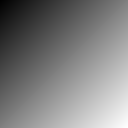
pii :: Complex Double
pii = 0 :+ pi
harmonicSignal :: Double -> Double -> Int -> Int -> Complex Double
harmonicSignal u v m n = exp ((2*pii) * ((u*(fromIntegral m) + v*(fromIntegral n)) :+ 0))
*Main> let signal = makeImage 128 128 (harmonicSignal (3 / 128) (2 / 128)) :: ComplexImage
*Main> signal
*Main> signal
< Image 128x128 >
*Main> display signal
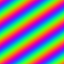
- readImage :: FilePath -> IO GrayImage
Given <string filename>, the name of a file containing an image
stored in ASCII .pgm format, readImage reads the file
and returns the image. For example,
*Main> frog <- readImage "images/frog.pgm"
*Main> display frog
- writeImage :: DisplayFormat df => FilePath -> df -> IO ()
Given a <string filename> and an <image> installed in DisplayFormat (GrayImage, ColorImage, ComplexImage),
writeImage creates a file representing the image in ASCII
.pgm format for GrayImages and .ppm for ColorImage and ComplexImage. Images written this way are normalized to integers between values 0 an 255; This may result in loss of detail on very fine grain images.
*Main> writeImage "frog.pgm" frog
creates a file which looks like this:
P2
# Creator: University of New Mexico Scheme 2.0
242 225
255
151 151 151 151 151 150 150 149 148 147 146 145 145 142 142
143 145 148 152 156 158 159 159 159 159 157 155 152 150 153
152 151 149 149 149 149 150 149 149 149 149 149 149 149 149
149 146 144 141 138 136 133 132 136 136 136 136 136 136 136
136 139 138 138 138 137 136 136 136 135 135 136 136 137 137
138 138 138 137 138 137 138 137 138 137 135 134 134 134 138
141 147 150 149 147 143 138 134 132 131 130 129 129 130 132
134 136 137 137 137 137 138 139 142 145 147 149 145 146 150
153 156 159 161 163 156 158 161 163 167 170 174 175 181 183
.
.
.
- ref :: Image i => i -> Int -> Int -> Pixel i
Given an <image>, a positive <int
i>, and a positive <int j>, ref returns
the pixel value at location (i, j).
*Main> ref frog 100 100
56.0
- rows :: Image i => i -> Int
Returns the number of rows of <image>. For example,
*Main> rows frog
225
- cols :: Image i => i -> Int
Returns the number of columns of <image>. For example,
*Main> cols frog
242
- transpose :: Image img => img -> img
Returns an image created by interchanging the rows and columns of the
<image>, i.e., the value at location (i, j)
of the result image is the value of <image> at location (j,
i). For example,
*Main> transpose frog
< Image 242x225 >
*Main> display . transpose $ frog
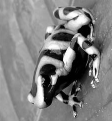
- convolveRows :: (Num (Pixel img), Image img) => [Pixel img] -> img -> img
Given a <list>
consisting solely of pixel values representing a 1D
convolution kernel and an <image>, convolveRows returns the 1D discrete
periodic convolution of the rows of the image with the kernel. For
example,
*Main> convolveRows [1, -1] frog
< Image 225x242 >
*Main> display . convolveRows [1, -1] $ frog
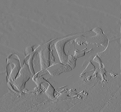
- convolveCols :: (Num (Pixel img), Image img) => [Pixel img] -> img -> img
Given a <list>
consisting solely of pixel values representing a 1D
convolution kernel and an <image>, convolveCols returns the 1D discrete
periodic convolution of the columns of the image with the kernel. For
example,
*Main> convolveCols [1, -1] frog
< Image 225x242 >
*Main> display . convolveCols [1, -1] $ frog
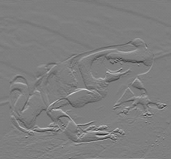
*Main> let dx = convolveRows [1, -1] frog
*Main> let dy = convolveCols [1, -1] frog
*Main> let grad = imageMap sqrt ((dx .*. dx) .+. (dy .*. dy)) :: GrayImage
*Main> grad
< Image 225x242 >
*Main> display grad
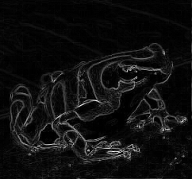
- convolve :: (Num (Pixel img), Image img) => [[Pixel img]] -> img ->
Given a an <array>
consisting solely of pixels representing a 2D
convolution kernel and an <image>, convolve returns the 2D discrete periodic
convolution of the image with the kernel. For example,
*Main> convolve [[1, 1, 1], [1, -8, 1], [1, 1, 1]] frog
< Image 225x242 >
*Main> display . convolve [[1, 1, 1], [1, -8, 1], [1, 1, 1]] $ frog>
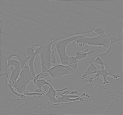
- downsampleCols :: Image img => img -> img
Given an <image>, downsampleCols
returns the image created by discarding the odd numbered rows, i.e.,
the value at location (i, j) of the result image is the value
of <image> at location (2i, j). For example,
*Main> downsampleCols frog
< Image 112x242 >
*Main> display . downsampleCols $ frog
- downsampleRows :: Image img => img -> img
Given an <image>, downsampleRows
returns the image created by discarding the odd numbered columns,
i.e., the value at location (i, j) is the value of
<image> at location (i, 2j). For example,
*Main> downsampleRows frog
< Image 225x121 >
*Main> display . downsampleRows $ frog
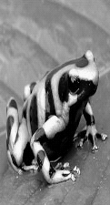
- downsample :: Image img => img -> img
*Main> let tinyFrog = downsample frog
*Main> tinyFrog
< Image 112x121 >
*Main> display tinyFrog
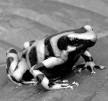
- upsampleCols :: (Data.Monoid.Monoid (Pixel img), Image img) => img -> img
Given an <image>, upsampleCols returns
an image with twice the number of rows where the value at location
(i, j) of the result image is the value of <image> at
location (i/2, j) if i is even and mempty otherwise. For
example,
*Main> upsampleCols tinyFrog
< Image 224x121 >
*Main> display . upsampleCols $ tinyFrog
- upsampleRows :: (Data.Monoid.Monoid (Pixel img), Image img) => img -> img
Given an <image>, upsampleRows returns
an image with twice the number of columns where the value at location
(i, j) of the result image is the value of <image> at
location (i, j/2) if j is even and mempty otherwise. For
example,
*Main> upsampleRows tinyFrog
< Image 112x242 >
*Main> display . upsampleRows $ tinyFrog

- upsample :: (Data.Monoid.Monoid (Pixel img), Image img) => img -> img
Given an <image>, upsample returns an
image with twice the number of rows and columns where the value at
location (i, j) of the result image is the value of
<image> at location (i/2, j/2) if both i and
j are even and mempty otherwise. For example,
*Main> upsample tinyFrog
< Image 224x242 >
*Main> display . upsample $ tinyFrog
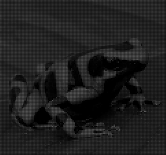
- pad :: (Data.Monoid.Monoid (Pixel img), Image img) => Int -> Int -> img -> img
Given a positive integer <m>, positive integer <n>, and
an <image>, pad
returns an image with m rows and n
columns where the value at location (i, j) of the result image
is the value of <image> at location (i, j) if i
is less than m and j is less than n and mempty
otherwise. For example,
*Main> pad 200 200 tinyFrog
< Image 200x200 >
*Main> display . pad 200 200 $ tinyFrog

- crop :: Image img => Int -> Int -> Int -> Int -> img -> img
Given a positive integer <i0>, positive integer <j0>,
positive integer <m>, positive integer <n> and an <image>, image-crop returns an image with
m rows and n columns where the value at location (i,
j) of the result image is the value of <image> at location
(i0 + i, j0 + j). For example,
*Main> let frogPart = crop 64 64 128 128 frog
*Main> frogPart
< Image 128x128 >
*Main> display frogPart
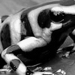
- leftToRight :: Image img => img -> img -> img
Given two images, both with the same number of rows,
leftToRight returns an image formed by
concatenating the images from left to right. For example,
*Main> leftToRight tinyFrog tinyFrog
< Image 112x242 >
*Main> display . leftToRight tinyFrog $ tinyFrog
- topToBottom :: Image img => img -> img -> img
Given two images, both with the same number of columns,
topToBottom returns an image formed by
concatenating the images from top to bottom. For example,
*Main> topToBottom tinyFrog tinyFrog
< Image 224x121 >
*Main> display . topToBottom tinyFrog $ tinyFrog
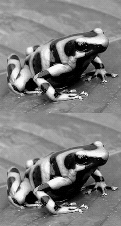
- leftToRight' and topToBottom' are versions of leftToRight and topToBottom that accept a List, Pair (,), or Triple (,,) of images and concatenates them.
- makeFilter :: Image img => Int -> Int -> PixelOp (Pixel img) -> img
Given a positive integer <m>, a positive integer
<n>, and a <function> returning a pixel value, makeFilter returns an image
with m rows and n columns. Let x equal i
if i is less than m/2 and i - m otherwise and let
y equal j if j is less than n/2 and j -
n otherwise. To match the periodicity of the 2D discrete Fourier
spectrum, the value of the result image at location (i, j) is
computed by applying <function> to x and y, e.g.,
the value at location (0, 0) is the result of applying
<function> to 0 and 0, the value at (m-1, n-1) is the
result of applying <function> to -1 and -1.
*Main Data.Complex> let filter = makeFilter 128 128 (\ i j -> fromIntegral (i + j)) :: GrayImage
*Main Data.Complex> filter
< Image 128x128 >
*Main Data.Complex> display filter
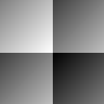
laplacianOfGaussian :: Double -> Int -> Int -> Double
laplacianOfGaussian stddev i j =
let r = fromIntegral (i*i + j*j)
x = (r / 2.0) / stddev
in (((-pi) / stddev) / stddev) * (1.0 - x) * (exp (-x))
*Main Data.Complex> let d2g = makeFilter 128 128 (laplacianOfGaussian 8) :: GrayImage
*Main Data.Complex> d2g
< Image 128x128 >
*Main Data.Complex> display d2g
- fft :: (Image img, Image img', ComplexPixel (Pixel img), Pixel img' ~ Complex Double) => img -> img'
Given an <image> whose pixels can be converted to a complex value,
fft returns an image with complex pixels
representing its 2D discrete Fourier transform (DFT). Because
the DFT is computed using the Fast Fourier Transform (FFT) algorithm,
the number of rows and columns of <image> must both be powers
of two, i.e., 2K where K is an integer. For
example,
*Main> let fftFrog = fft frogPart :: ComplexImage
*Main> let magFrog = magnitude fftFrog :: GrayImage
*Main> let logFrog = imageMap log magFrog :: GrayImage
*Main> logFrog
< Image 128x128 >
*Main> display logFrog
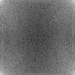
*Main> fft d2g :: ComplexImage
< Image 128x128 >
*Main> display (fft d2g :: ComplexImage)
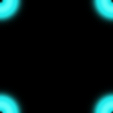
gaussian variance i j =
let r = fromIntegral (i*i + j*j)
x = (r / (2*pi)) / variance
in exp (-x)
*Main> let g = makeFilter 128 128 (gaussian 8) :: GrayImage
*Main> display g
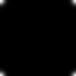
*Main> fft g :: ComplexImage
< Image 128x128 >
*Main> display (fft g :: ComplexImage)
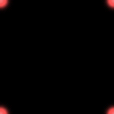
- ifft :: (Image img, Image img', ComplexPixel (Pixel img), Pixel img' ~ Complex Double) => img -> img'
Given an <image>, ifft returns a complex
image representing its 2D inverse discrete Fourier transform
(DFT). Because the inverse DFT is computed using the Fast Fourier
Transform (FFT) algorithm, the number of rows and columns of
<image> must both be powers of two, i.e., 2K
where K is an integer. For example,
*Main> let d2g' = fft d2g :: ComplexImage
*Main> let frogPart' = (fft frogPart) :: ComplexImage
*Main> ifft (d2g' .*. frogPart') :: ComplexImage
< Image 128x128 >
*Main> display (ifft (d2g' .*. frogPart') :: ComplexImage)

*Main> let g' = fft g :: ComplexImage
*Main> ifft (frogPart' .*. g') :: ComplexImage
< Image 128x128 >
*Main> display (ifft (frogPart' .*. g') :: ComplexImage)
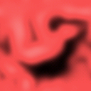
- realPart :: (Image img, Image img', ComplexPixel (Pixel img), Pixel img' ~ Double) => img -> img'
Given an image with complex pixels,
realPart returns an image representing the
real part. For example,
*Main> let cosine = realPart signal :: GrayImage
*Main> cosine
< Image 128x128 >
*Main> display cosine
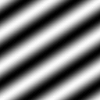
*Main> let inverse = ifft (frogPart' .*. d2g') :: ComplexImage
*Main> realPart inverse :: GrayImage
< Image 128x128 >
*Main> display (realPart inverse :: GrayImage)
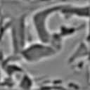
*Main> let inverse = ifft (frogPart' .*. g') :: ComplexImage
*Main> realPart inverse :: GrayImage
< Image 128x128 >
*Main> display (realPart inverse :: GrayImage)
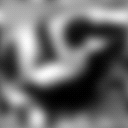
- imagPart :: (Image img, Image img', ComplexPixel (Pixel img), Pixel img' ~ Double) => img -> img'
Given a <complex-image Z>,
imagPart returns an image representing the
imaginary part of z (or Z). For example,
*Main> let sine = imagPart signal :: GrayImage
*Main> sine
< Image 128x128 >
*Main> display sine
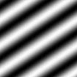
- complex :: (Image img, Image img', Pixel img' ~ C.Complex (Pixel img)) => img -> img -> img'
Given an <image X> and an <image Y> complex returns a
complex image with real part X and
imaginary part Y. For example,
*Main> complex cosine sine :: ComplexImage
< Image 128x128 >
*Main> display (complex cosine sine :: ComplexImage)
- complexImageToRectangular :: (Image img, Image img', ComplexPixel (Pixel img), Pixel img' ~ Double) => img -> (img', img')
Given a <complex image>, complexImageToRectangular
returns a pair containing two real images representing its real and
imaginary parts. For example,
*Main> leftToRight' (complexImageToRectangular signal :: (GrayImage, GrayImage))
< Image 128x256 >
*Main> display . leftToRight' $ (complexImageToRectangular signal :: (GrayImage, GrayImage))
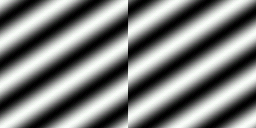
- magnitude :: (RealFloat (Pixel img'), Image img, Image img', Pixel img ~ C.Complex (Pixel img')) => img -> img'
Given a <complex-image Z>,
magnitude returns a real image representing the
magnitude of Z. For example,
*Main> magnitude signal :: GrayImage
< Image 128x128 >
*Main> display (magnitude signal :: GrayImage)
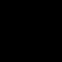 <--- Image is not correct in haskell libray because some of the values are ~0.9999 and others are 1.0. When normalized the 0.999 values go to 0 and the remaining go to 1.
- angle :: (RealFloat (Pixel img'), Image img, Image img', Pixel img ~ C.Complex (Pixel img')) => img -> img'angle returns a real number image representing the
phase of z (or Z). For example,
*Main> angle signal :: GrayImage
< Image 128x128 >
*Main> display (angle signal :: GrayImage)
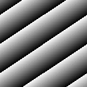
- complexImageToPolar :: (RealFloat (Pixel img'), Image img, Image img', Pixel img ~ C.Complex (Pixel img')) => img -> (img', img')
Given a <complex-image>, complexImageToPolar returns a
a pair of two real images representing its magnitude and
phase. For example,
*Main> complexImageToPolar signal :: (GrayImage, GrayImage)
(< Image 128x128 >,< Image 128x128 >)
*Main> display . leftToRight' $ (complexImageToPolar signal :: (GrayImage, GrayImage))
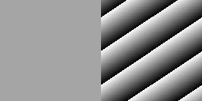
- (+) :: Num a => a -> a -> a
Any image installed in the Num type class (all Boxed images) may be added together if their dimensions match. For each (i, j) the resulting pixel will be the sum of the two pixels from the provided images.
*Main> callisto <- readImage "images/callisto.pgm"
*Main> display callisto
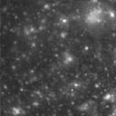
*Main> ganymede <- readImage "images/ganymede.pgm"
*Main> display ganymede

*Main> callisto + ganymede
< Image 128x128 >
*Main> display $ callisto + ganymede
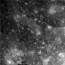
- (-) :: Num a => a -> a -> a
Any image installed in the Num type class (all Boxed images) may be subtracted from each other if their dimensions match. For each (i, j) the resulting pixel will be the difference of the two pixels from the provided images.
*Main> display $ callisto - ganymede

- (*) :: Num a => a -> a -> a
Any image installed in the Num type class (all Boxed images) may be multiplied together if their dimensions match. For each (i, j) the resulting pixel will be the product of the two pixels from the provided images.
*Main> display (callisto * ganymede)

- (/) :: Fractional a => a -> a -> a
Any image installed in the Fractional type class (all Boxed images) may be diviedfrom each other if their dimensions match. For each (i, j) the resulting pixel will be the quotient of the two pixels from the provided images.
*Main> display (callisto / ganymede)

- arrayToImage :: Image img => Array (Int, Int) (Pixel img) -> img
Given an <array> consisting entirely of pixel values, arrayToImage returns an image with
the same dimensions as the array. For example,
*Main> let array = listArray ((0,0),(127,127)) [0..] :: Array (Int,Int) Double
*Main> arrayToImage array :: GrayImage
< Image 128x128 >
*Main> display (arrayToImage array :: GrayImage)

- imageToArray :: Image img => img -> Array (Int, Int) (Pixel img)
Given an <image>, imageToArray returns
an array with the same dimensions as the image. For example,
*Main> let arr = listArray ((0,0),(2,2)) [0..] :: Array (Int, Int) Double
*Main> imageToArray (arrayToImage arr :: GrayImage)
array ((0,0),(2,2)) [((0,0),0.0),((0,1),1.0),((0,2),2.0),((1,0),3.0),((1,1),4.0),((1,2),5.0),((2,0),6.0),((2,1),7.0),((2,2),8.0)]
- (>.) :: (Ord (Pixel img), Image img, BinaryPixel (Pixel img)) => Pixel img -> img -> img
Given a pixel, c, that is orderable and an image whose pixels have binary values,
returns a binary image that for each pixel p if p > c then it is on otherwise it is off. Note, there is a variation of (>.) with (.>) where the arguments are flipped.
*Main> stop <- readColorImage "images/stop.ppm"
*Main> display stop
*Main> let (r,g,b) = colorImageToRGB stop
*Main> let binaryStop = (r + g + b) .> 400
*Main> display binaryStop
- (<.) :: (Ord (Pixel img), Image img, BinaryPixel (Pixel img)) => Pixel img -> img -> img
Given a pixel, c, that is orderable and an image whose pixels have binary values,
returns a binary image that for each pixel p if p > c then it is on otherwise it is off. Note, there is a variation of (<.) with (.<) where the arguments are flipped.
*Main> let binaryStop = (r + g + b) .< 400
*Main> display binaryStop
- (.==.) :: (Eq (Pixel img), Image img, BinaryPixel (Pixel img)) => img -> img -> img
Given two images of the same type whose pixels are installed in Eq, returns an image that for each pixel (i,j) is on if the pixels in the provided image are equivalent and off otherwise.
shiftRight :: Image img => Int -> img -> img
shiftRight s img = makeImage (rows img) (cols img) shift where
shift r c = ref img r c' where
c' = let sum = c + s
in if sum < (cols img) then sum else sum - (cols img)
*Main> let binaryStop = (r + g + b) .> 400
*Main> display $ (shiftRight 100 binaryStop)

*Main> display $ (shiftRight 100 binaryStop) .==. binaryStop

- normalize :: (Num (Pixel img), Scaleable (Pixel img), MaxMin (Pixel img), Image img) => img -> img
Given a an <image>, normalize returns an
image with the same dimensions where the values have been normalized to
lie in the interval [0, 1].
- (image-shrink <image> <number x>) ---- TODO For Complex Images
Given a real (or complex) <image> and a real positive
<number x>, image-shrink returns a real (or complex)
image with the same dimensions. Let z be the value of
<image> at location (i, j). If |z| < x, then the
value of the result image at location (i, j) is zero.
Otherwise, it is z - x if z > 0 and z + x if z
< 0. If <image> is complex, then the value of the complex
result image at location (i, j) is zero if |z| < x,
otherwise the result has the same phase as z but the amplitude
is decreased by x.
- medianFilter :: (Fractional (Pixel img), Image img) => Int -> Int -> img -> img
Given two positive integers, <number
m> and <number n> and a an <image>, medianFilter returns an image
with the same dimensions where each pixel (i, j) in
<image> is replaced by the pixel with median value in the
neighborhood of size <number m> times <number n>
centered on (i, j).
*Main> let medianFilteredFrog = medianFilter 5 5 frog
*Main> display medianFilteredFrog
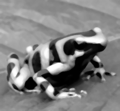
- imageFold :: Image img => (Pixel img -> b -> b) -> b -> img -> b
Given a <function> of a pixel to a b which returns a
b, imageFold returns the b which results
from repeatedly applying <function> to: 1) the result
accumulated to this point (initially the value of the first pixel);
and 2) the value of the next pixel.
- matrixProduct :: (Num (Pixel img), Image img) => img -> img -> img
Given an <image X1> and an <image X2>, where the number of columns of
X1 equals the number of rows of
X2, matrixProduct returns an image
representing the matrix product of X1 and
X2.
*Main> display (matrixProduct frogPart frogPart)
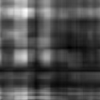
- imageMap :: (Image a, Image b) => (Pixel a -> Pixel b) -> a -> b
Given a <function> of a pixel values of type 'a' to a pixel values of type 'b', and
an image containing pixel values of type 'a', returns an
image that for each (i,j) the pixel value is applied to the pixel in the
provided image. Note: Boxed images are Functor and imageMap = fmap for Boxed images.
*Main> let img = imageMap (\ p -> if (p > 0) then (-1 * p * (log p)) else 0) frog :: GrayImage
*Main> display img

- readColorImage :: FilePath -> IO ColorImage
Given <string filename>, the name of a file containing an image
stored in ASCII .ppm format, readColorImage reads the
file and returns the color image. For example,
*Main> cacti <- readColorImage "images/cactii.ppm"
*Main> display cacti
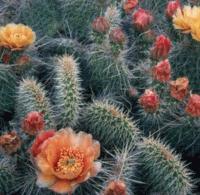
- colorImageRed :: ColorImage -> GrayImage
Given <ColorImage>, colorImageRed returns a GrayImage
representing its red color component. For example,
*Main> let red = colorImageRed cacti
*Main> display red

- colorImageGreen :: ColorImage -> GrayImage
Given <ColorImage>, colorImageGreen returns a GrayImage
representing its green color component. For example,
*Main> let green = colorImageGreen cacti
*Main> display green
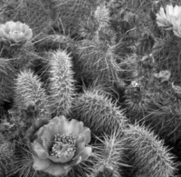
- colorImageBlue :: ColorImage -> GrayImage
Given <ColorImage>, colorImageBlue returns a GrayImage representing its blue color component. For example,
*Main> let blue = colorImageBlue cacti
*Main> display blue
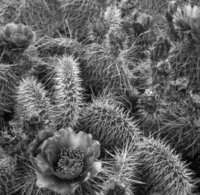
- rgbToColorImage :: (GrayImage, GrayImage, GrayImage) -> ColorImage
Given a triple of GrayImages, rgbToColorImage returns a ColorImage with red color
component, R, green color component, G, and blue color
component, B.
*Main> display . rgbToColorImage $ (red,green,blue)
- colorImageToRGB :: ColorImage -> (GrayImage, GrayImage, GrayImage)
Given a <ColorImage>, colorImageToRGB returns a triple
containing three GrayImages representing the red, green, and blue
color components of <color-image>. For example,
*Main> display . leftToRight' $ colorImageToRGB cacti
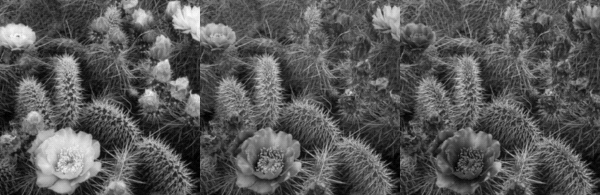
- colorImageToHSI :: ColorImage -> (GrayImage, GrayImage, GrayImage)
Given a ColorImage, colorImageToHSI returns a triple containing three GrayImages representing the hue, saturation, and intensity of the color
image. For example,
*Main> let (h,s,i) = colorImageToHSI cacti
*Main> display h
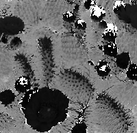
*Main> display s
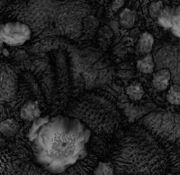
*Main> display i
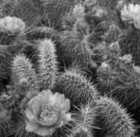
- hsiToColorImage :: (GrayImage, GrayImage, GrayImage) -> ColorImage
Given a triple, representing the hue, saturation, and intensity of a color
image, hsiToColorImage returns a ColorImage. For example,
*Main> display . hsiToColorImage $ (h, s, i)
- makeHotImage :: GrayImage -> ColorImage
Given a <GrayImage>, makeHotImage returns a color
image with the same dimensions. The R, G, B values of the result image
at (i, j) are determined by using the value of <image>
at (i, j) to index three lookup tables. These lookup tables
implement a false coloring scheme which maps small values to black,
large values to white, and intermediate values to shades of red,
orange, and yellow (in that order).
*Main> display . makeHotImage $ frog
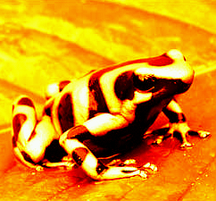
- dilate' :: (Num (Pixel img), Ord (Pixel img), Image img, BinaryPixel (Pixel img)) => [[Pixel img]] -> img -> img
Given a 2D list consisting solely
of pixels representing a structuring element, and a binary <image>, dilate'
returns the morphological dilation of <image> with the
structuring element. Note: There is a dilate function that uses a default structuring element of [[1,1], [1,1]]. For example,
structure = [[0, 0, 1, 0, 0],
[0, 1, 1, 1, 0],
[1, 1, 1, 1, 1],
[0, 1, 1, 1, 0],
[0, 0, 1, 0, 0]]
*Main> display . dilate' structure $ binaryStop
- erode' :: (Eq (Pixel img), Num (Pixel img), Image img, BinaryPixel (Pixel img)) => [[Pixel img]] -> img -> img
Given a 2D list consisting solely
of pixels representing a structuring element, and a binary <image>, erod'
returns the morphological erosion of <image> with the
structuring element. Note: There is a erod function that uses a default structuring element of [[1,1], [1,1]]. For example,
*Main> display . erode' structure $ binaryStop

- outline :: (Image img, Pixel img ~ Double) => img -> img
Given an <image>, outline returns an image where edge pixels are
set to the value 1 and non-edge pixels are set to the
value 0. Pixel (i, j) is an edge pixel iff its value is
different than the value of either pixel (i, j+1) or pixel
(i+1, j).
*Main> display . outline $ binaryStop
- label :: (Image img, Pixel img ~ Double) => img -> img
Given a binary <image>, label returns an image where
pixels in distinct connected components (based on 4-neighbor
connectivity) have distinct integer values. These values range from 1
to n where n is the number of connected components in
<image>.
*Main> display . makeHotImage . label $ binaryStop
<li><xmp>distanceTransform :: (Image img, Pixel img ~ Double) => img -> img
Given a binary <image>, distanceTransform returns an
image representing the 2D distance transform of <image>. For
example,
*Main> display . distanceTransform . dilate $ binaryStop
- open' :: (Num (Pixel img), Ord (Pixel img), Image img, BinaryPixel (Pixel img)) => [[Pixel img]] -> img -> img</xmp<
Given a list consisting of pixels representing a structuring element, and an image, <i>open'</i>
returns the morphological opening of &#60;image&#62 with the
structuring element. Note: There is a version <i>open</i> that uses the
default structuring element [[1,1],[1,1]].
<li><xmp>close' :: (Num (Pixel img), Ord (Pixel img), Image img, BinaryPixel (Pixel img)) => [[Pixel img]] -> img -> img
Given a list consisting of pixels representing a structuring element, and an image, open'
returns the morphological closing of <image> with the
structuring element. Note: There is a version close that uses the
default structuring element [[1,1],[1,1]].
- areas :: (RealFrac (Pixel img), MaxMin (Pixel img), Image img) => img -> Data.Vector.Unboxed.Base.Vector Double
Given an <image>, areas returns a vector where the
n-th component equals the number of pixels with value
n. If <image> is the result of applying label to
a binary image, then the vector represents the areas of the
connected-components of the binary-image. If not, areas returns
the grey-level histogram of the image. For example,
*Main> areas . label $ binaryStop
fromList [9676.0,1033.0,1201.0,6.0,718.0,4.0,0.0,1036.0]
- perimeters :: (Image img, Pixel img ~ Double) => img -> Data.Vector.Unboxed.Base.Vector Double
Given an <image>, perimeters returns a vector where
the n-th component equals the number of pixels with value
n which are adjacent to pixels of value 0 and the 0-th
component equals the sum of the other components. If <image> is
the result of applying label to a binary image, then the vector
represents the perimeters of the connected-components of the
binary-image. For example,
*Main> perimeters . label $ binaryStop
fromList [1072.0,304.0,322.0,6.0,184.0,4.0,0.0,252.0]
- centersOfMass :: (Image img, Pixel img ~ Double) => img -> [(Double, Double)]
Given an <image>, the result of applying label to a
binary-image, centersOfMass returns a vector where the
n-th component is a two element list representing the average
row and column indices of pixels of the n-th
connected-component of <image>. For example,
*Main> centersOfMass . label $ binaryStop
[(42.373668925459825,24.764762826718297),(41.76935886761032,92.25978351373855),(14.5,14.5),(35.139275766016716,57.46239554317549),(14.5,81.5),(NaN,NaN),(35.69015444015444,130.08590733590734)]
- boundingBoxes :: (Image img, Pixel img ~ Double) => img -> [(Int, Int, Int, Int)]
Given an <image>, the result of applying label to a binary-image,
centersOfMass returns a vector where the n-th
component is a four element list representing the minimum and maximum
row and column indices of pixels of the n-th
connected-component of <image>. For example,
*Main> boundingBoxes . label $ binaryStop
[(10,8,73,40),(10,75,73,109),(12,12,17,17),(11,43,72,72),(13,80,16,83),(86,159,0,0),(12,118,72,150)]